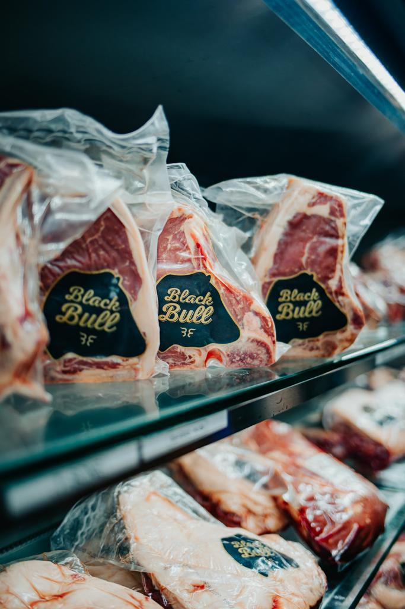

¿QUÉ ES ENVASADO AL VACÍO EN ORIGEN?
El E.V.O es un método de envasado, que consiste en extraer el oxígeno con el objetivo de evitar la oxigenación y así poder alargar la vida útil del producto, lo más importante es que cada corte está envasado en ORIGEN, esto significa que está producido dentro del mismo establecimiento frigorífico bajo estrictas normas de calidad, higiene y seguridad alimentaria. El proceso de envasado al vacío se realiza bajo la supervisión de personal de Calidad y Senasa realizando todos los controles necesarios para lograr que el producto esté en óptimas condiciones sanitarias para su comercialización
Envasado al vacío en Frigorífico Bustos y Beltrán, garantizando la calidad e inocuidad de sus productos bajo estrictas normas de calidad con estándares internacionales.
LOS BENEFICIOS DEL ENVASADO AL VACÍO EN ORIGEN
-
Cortes frescos, sin oxidación de la carne manteniendo el sabor, calidad y sus cualidades organolépticas
-
Conservación por mas tiempo, los cortes Black bull podes refrigerarlos hasta 15 días en Heladeras domésticas, y congelados hasta 12 meses sin sufrir alteraciones en el corte.
-
Merma de peso es nula, ya que no se tiene perdida de peso por perdidas de líquidos ni deshidratación de los cortes.
-
Mejora la terneza de la carne, logrando una maduración en el envase lo cual la carne logra un sabor y terneza inigualable.
-
Se puede congelar sin que se queme o se seque la carne
-
El EV no permite la contaminación cruzada de alimentos en la heladera
¿CÓMO MANIPULAR LA CARNE CORRECTAMENTE?
Los cortes enfriados al abrir su envase, deben dejar reposar al aire libre o heladera durante unos 10-15 minutos para que la carne se oxigene recuperando el color y textura normal del corte.
Para los cortes congelados, se recomienda descongelar con el mismo envasado al vacío en heladera 24-48 hs antes, para lograr que no se rompan las fibras de la carne y así no perder la deshidratación y textura del corte. NO se recomienda descongelar en Microondas, ni agua Caliente ni tampoco directamente al fuego o parrilla ya que perderá mucha calidad en el producto.
Los cortes Black Bull envasados al vacío, deben mantenerse en heladera y se recomienda almacenar en gaveta superior manteniendo los cortes entre 1° y 3° grados, de esta manera podrá almacenarlos los 15 días correspondientes. Los cortes de Cerdo y Achuras se conservarán por 7 días. Todos los Cortes También se pueden Congelar hasta 12 Meses
RECOMENDACIONES
CADENA DE FRIO
Un alimento fresco puede permanecer como máximo dos horas a temperatura ambiente. Por eso, se recomienda ser los primeros en guardarse en la heladera.
GUARDAR LOS ALIMENTOS
Guardar en la gaveta superior de la heladera entre 1º a 2º. Los cortes envasados al vacío pueden permanecer congelados hasta por 12 meses.
MODO DE COCCION
Asegurarse que la temperatura que se cocine siempre sea mayor a los 70ºC. El Tiempo de cocción de los alimentos que se encuentran congelados es mayor a lo habitual.